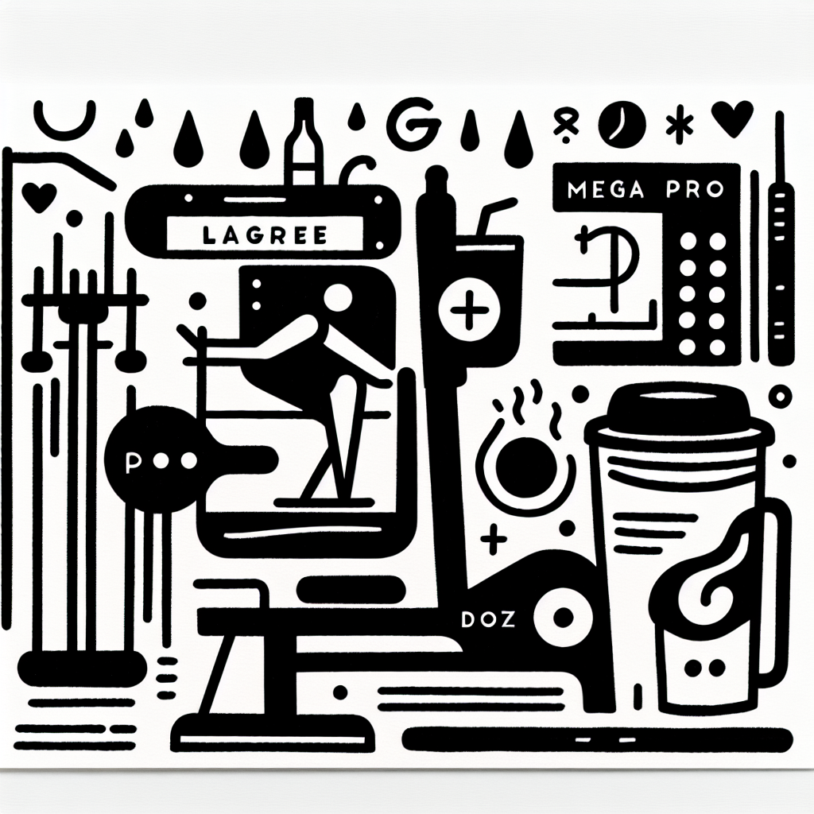

Préparer sa première séance de Lagree chez DOZ
Préparer sa première séance de Lagree chez DOZ
Bienvenue chez DOZ, un lieu de vie unique à Anglet où le sport bien-être et le café de spécialité coexistent harmonieusement. Vous envisagez de vous lancer dans une séance de Lagree ? Ce billet est fait pour vous. Découvrez comment aborder votre première session dans notre studio, équipé des célèbres machines MegaPro, et pourquoi cette méthode révolutionnaire de renforcement musculaire haute intensité peut transformer votre routine fitness.
Qu'est-ce que la méthode Lagree ?
Avant de plonger dans les détails pratiques, il est essentiel de comprendre ce qu'est réellement la méthode Lagree. Inventée par Sebastien Lagree, cette méthode unique combine les principes du Pilates avec des exercices de musculation et d'entraînement cardio à haute intensité, tout en préservant les articulations grâce à un faible impact.
- Renforcement musculaire
- Amélioration de l'endurance
- Flexibilité accrue
- Équilibre et coordination
Chez DOZ, nous exploitons la puissance des machines MegaPro, spécialement conçues pour le Lagree, pour garantir que chaque session soit efficace et adaptée à votre niveau de condition physique.
Pourquoi choisir DOZ pour votre premier Lagree ?
A Anglet, DOZ se démarque non seulement par ses équipements de pointe mais aussi par son esprit authentique et sa philosophie 'Instant Brut'. Ici, pas d'artifices - juste une pure concentration sur la qualité, l'effort, et le réconfort.
- Un environnement lumineux et moderne avec une esthétique minimaliste
- Une équipe de coachs passionnés et expérimentés
- Des sessions adaptées à tous les niveaux, même les débutants
Et, bien sûr, après l'effort, le réconfort. Notre Coffee Shop vous propose une cuisine saine, de saison, et du café de spécialité torréfié avec soin pour prolonger l'expérience plaisir.
Comment se préparer pour sa première séance ?
Pour tirer le meilleur parti de votre première séance, une bonne préparation est essentielle. Voici quelques conseils pour que tout se passe à merveille :
- Hydratation : Buvez suffisamment d'eau avant, pendant et après votre session pour rester hydraté.
- Tenue : Optez pour des vêtements confortables, qui permettent une grande liberté de mouvement. Des chaussures de sport adaptées sont également recommandées.
- Arrivée à l'avance : Prenez le temps de découvrir les lieux et de vous familiariser avec le studio avant le début de votre séance.
- Communication : N'hésitez pas à informer votre coach de toute condition physique particulière ou de vos objectifs personnels.
Que faut-il attendre de votre première session ?
Votre première séance de Lagree chez DOZ sera une expérience intense mais gratifiante. Voici ce à quoi vous pouvez vous attendre :
- Une introduction détaillée à l'utilisation des machines MegaPro
- Une session guidée par un entraîneur qui adaptera les exercices à votre niveau
- Un focus sur l'alignement, l'équilibre, et le contrôle du corps
- Une atmosphère encourageante et motivante pour surpasser vos limites
Soyez prêt à ressentir l'énergie de votre corps après la séance, avec une sensation de bien-être global.
Venez pour le sport, restez pour le café
Chez DOZ, votre première expérience de Lagree sera enrichie par notre ambiance chaleureuse et conviviale. Après votre session, détendez-vous dans notre Coffee Shop en dégustant l'une de nos spécialités locales ou un café fraîchement torréfié.
Sentez-vous chez vous dans ce lieu où l'effort physique et le réconfort s'équilibrent dans une parfaite harmonie. Que vous soyez un passionné de sport ou un gourmet du café, DOZ est l'endroit où vous pouvez explorer vos passions pleinement.
Vous êtes prêt pour ce voyage vers le bien-être et la découverte de nouvelles sensations. Réservez dès maintenant votre première séance de Lagree chez DOZ et découvrez une nouvelle dimension de votre fitness et de votre style de vie 'Healthy & Surf' au cœur du Pays Basque.